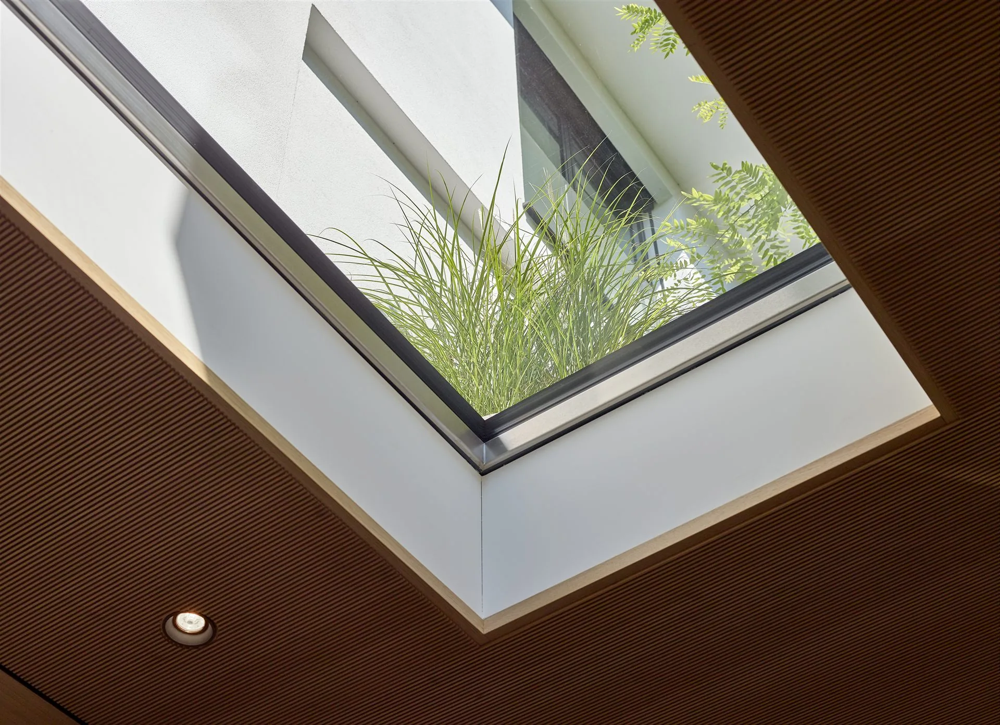

Zakázkové pochozí světlíky a prosklené podlahy
Světlo prochází
místy, která ostatní
považují za podlahu.
Dokonalost bez kompromisu

GLASSFLOOR není řešení pro každý projekt.
Není levnější variantou běžného světlíku a nesnaží se jí být. Pokud o výběru rozhoduje nejnižší pořizovací cena, existují vhodnější řešení a řekneme to rovnou. GLASSFLOOR dává smysl na stavbách, kde váží architektura, detail, technická kvalita a výsledné provedení. Proto každý projekt nejprve technicky posuzujeme.

Co je pochozí světlík GLASSFLOOR.
GLASSFLOOR je pochozí světlík a prosklená podlaha švýcarského výrobce Heliobus AG ze St. Gallen. Nosné zasklení v nerezovém rámu slouží jako běžně pochozí plocha terasy, střechy nebo podlahy a přivádí denní světlo do podlaží pod ní. V České republice ho dodává WT - WINDOWS TOMORROW s.r.o.
Navržen pro konkrétní stavbu.
Výrobek se přizpůsobuje stavbě, ne stavba výrobku. Standardní formáty pokrývají běžné případy. Kde se stavba do řady nevejde, vzniká rozměr, skladba zasklení i způsob osazení pro jeden konkrétní projekt a do jeho finální roviny se také vyrobí.
Čtverec, obdélník i kruh. Buď některý ze standardních formátů, nebo světlý rozměr, který určí návrh stavby.
Nosné zasklení i rám se navrhují podle skladby stropu nebo terasy a podle zatížení, které je čeká.
Sklo dosedá do jedné roviny s okolním povrchem. Po dokončení stavby zůstane vidět detail, ne technika.
Každý kus se kompletuje a kontroluje ve výrobě Heliobus AG, než opustí Švýcarsko.

Jeden systém, tři tvary.
Řady se liší tím, kolik rámu je po osazení vidět, a tvarem otvoru. Skladba zasklení, nosnost i způsob osazení zůstávají stejné.

GLASSFLOOR chrome
Nerezový rám široký 4 cm zůstává přiznaný. Působí masivně a drží tvar i u větších rozměrů.
- Tvarčtverec a obdélník
- Otvor80 × 80 až 250 × 80 cm
- Rámnerez, výška 12 cm

GLASSFLOOR pure
Velmi úzký obvodový rám. Ze skla se stává téměř jen plocha v podlaze.
- Tvarčtverec a obdélník
- Otvor80 × 80 až 250 × 80 cm
- Rámnerez, minimální šířka

GLASSFLOOR circle
Kruh jako protiváha pravoúhlé stavbě, nebo naopak doplnění organické architektury.
- Tvarkruh
- Otvor⌀ 60 až 120 cm
- Rámnerez, výška 12 cm
Každá řada existuje i v požárně odolném provedení FIRESTOP a ve variantách s větráním (AIRFLOW) nebo odvodem kouře (RWA). Mimo standardní řadu vyrábíme na míru od 40 cm.
Zumikon · obytné podlaží pod zahradou
Rodinný dům · Švýcarsko
Zahrada zůstala pochozí v celé ploše. Řada světlíků sleduje chodník podél fasády a o podlaží níž nahrazuje umělé osvětlení denním světlem.

Další stavby a celou galerii najdete na stránce Reference.
Standardní rozměr,
nebo přesně ten váš.
Standardní formáty i výroba na míru od 40 cm
Podle toho, co potřebujete.
Web je rozdělený podle otázek, které si u pochozího prosklení kladou architekti, projektanti i investoři.
Pro architekty a projektanty
Technická data, výrobní detaily, podklady k projektu a otevřeně o tom, kdy GLASSFLOOR doporučit nebudeme.
OtevřítReference
Vila v Zumikonu, bazén u Tegernsee, administrativní budova a další realizace ze Švýcarska.
Zobrazit realizaceVýroba a lidé
Kdo GLASSFLOOR vyvíjí ve St. Gallen, kdo ho dodává v České republice a jak vzniká každý kus.
O násNejčastější otázky o pochozích světlících.
Co je GLASSFLOOR?
GLASSFLOOR je zakázkově vyráběný pochozí světlík švýcarského výrobce Heliobus AG. Nosné prosklení slouží jako běžně pochozí část terasy, střechy nebo podlahy a přivádí denní světlo do podlaží pod ní.
Kdo GLASSFLOOR vyrábí a kdo ho dodává v České republice?
Vývoj, konstrukce a kompletace každého kusu probíhají ve výrobě Heliobus AG ve švýcarském St. Gallen. V České republice systém GLASSFLOOR dodává společnost WT - WINDOWS TOMORROW s.r.o., specialista na denní světlo v interiéru.
Jaké rozměry se vyrábějí?
Řady chrome a pure standardně v šesti formátech otvoru od 80 × 80 do 250 × 80 cm, řada circle ve čtyřech průměrech 60 až 120 cm. Na míru se vyrábí od 40 cm bez horní hranice.
Jaké zatížení pochozí zasklení snese?
Užitné zatížení je 5,0 kN/m², třída odolnosti P8B. Vyšší únosnost včetně pojezdu se navrhuje zakázkově.
Hodí se GLASSFLOOR i do interiéru nebo jako požární strop?
Ano. Řada pure se používá i v podlahách obytných prostor a varianta FIRESTOP plní funkci požárně dělicí konstrukce s odolností REI 30 až REI 120.
Kolik GLASSFLOOR stojí?
GLASSFLOOR je zakázkové řešení bez ceníku, cena vychází z technického návrhu konkrétního kusu. U menších standardních formátů začíná kolem 100 000 Kč.
Jak dlouho trvá dodání?
Každý kus jde do výroby až po odsouhlaseném návrhu a vyrábí se ve Švýcarsku. Mezi zadáním a osazením počítejte s několika týdny.
Jak spolupráce začíná?
Pošlete základní výkres, řez nebo popis záměru. Nejprve posoudíme, zda je GLASSFLOOR pro danou konstrukci a architektonický záměr vhodným řešením, a navrhneme další technický postup.
Představte nám svůj projekt.
Pošlete nám základní výkres nebo popis záměru. Posoudíme vhodnost systému GLASSFLOOR a navrhneme další technický postup.
Každý projekt nejprve technicky posuzujeme. GLASSFLOOR je zakázkové řešení bez ceníku. Cena vychází z technického návrhu konkrétního kusu.
Oficiální zastoupení GLASSFLOOR® pro Českou republiku – WT - WINDOWS TOMORROW s.r.o. Vyrábí a garantuje Heliobus AG, St. Gallen, Švýcarsko.
Stačí základní výkres, řez nebo jen popis záměru. Klidně i fotka nebo náčrt tužkou.
Řekneme na rovinu, jestli GLASSFLOOR na vaši konstrukci sedí, a proč.
Konkrétní řadu, rozměr a způsob osazení, případně i orientační cenu.